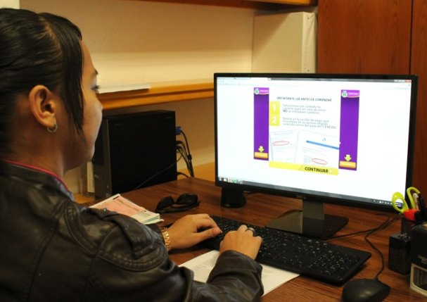

Jorge Eduardo Arana Jimenez
Ingenieria de Software - Facultad de Ingenieria
Registro 288130
Horario
|
Lunes |
Martes |
Miercoles |
Jueves |
Viernes |
| 07:00 - 08:00 |
Bases de datos |
Tecnologias Web |
Bases de datos |
Bases de datos |
Bases de datos |
| 08:00 - 09:00 |
Tecnologias Web |
Tecnologias Web |
Tecnologias Web |
| 09:00 - 10:00 |
Algebra Lineal |
Algebra Lineal |
|
Investigacion de Operaciones |
Investigacion de Operaciones |
| 10:00 - 11:00 |
|
|
Algebra Lineal |
Algebra Lineal |
| 11:00 - 12:00 |
|
|
|
|
|
| 12:00 - 13:00 |
|
|
|
Ingles III |
Lenguaje y Comunicacion |
| 13:00 - 14:00 |
Ingles III |
Ingles III |
|
|
|
| Universidad Autonoma de Chihuahua ® 2015 |
Instala UACH Módulos de Apoyo para solicitud de fichas de admisión

Se abrieron módulos de Apoyo de Atención en el Centro de Idiomas, en Ciudad Juárez dentro de la Facultad de Ciencias Políticas y Sociales; En Parral en el interior de la Facultad de Economía Internacional, en Delicias dentro de la Facultad de Contaduría y Administración y en cada Centro Regional de Educación(CRES).
El periodo de obtención de fichas será del lunes 28 de septiembre al viernes 23 de octubre y estará disponible vía Internet en www.uach.mx/fichas.
Después de registrarse, el aspirante deberá... Leer más...
Castores doma a los Potros en Inter Universitario de fútbol americano
El equipo de los Castores de Ingeniería derrotaron a los Potros de Zootecnia por pizarra de 14-7, en un juego que se fue empatado desde el primer cuarto hasta el tercero 7-7, pero en el último cuarto, sacaron la victoria en un pase de Daniel “Gato” Cota de 20 yardas para levantar a los fanáticos de los asientos.
En otros resultados, el equipo de los Búfalos de Medicina derroto a los Apaches de Derecho por cartones de 6-0, en una amargo debut para Joseph “Choky” Holguín como head coach de los futuros abogados.
Los Linces de la Facultad de Contaduría y Administración derrotaron por la vía del nocaut a los Grillos de Ciencias Políticas por 35-0, en un juego que se definió en el tercer cuarto.
Contactame
Facebook
Twitter
 Google+
Google+